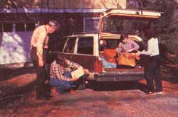

The Auto Transporting Business
Moving cars for money makes for cheap travel.
by Ole Wik
May/June 1983
 The next time you're faced with the need to go cross-country, or even to travel just a few hundred miles from home, you'll probably find yourself having to decide how to get there. After all, trains and airplanes are expensive (and are becoming more so)... hitchhiking may be dangerous... and lengthy bus travel can be pretty grim. Of course, there's always the private automobile ... but if you don't own one-or if your car is too far past its prime to be a realistic choice for the planned journey-that's no answer, either.
Well, if you're likely to encounter that problem (and many folks do have to deal with it time and time again), take heart! My family and I have stumbled upon what we consider to be an almost perfect solution: auto transporting companies. Found in most large cities, these organizations specialize in moving cars from one location to another, usually for private owners or rental firms. But they don't have the vehicles hauled in big transport trucks. Instead, the agencies simply find drivers (usually by advertising in newspaper classified sections and in the Yellow Pages) who are interested in traveling in the same direction and are willing to pick up most or all of the tab for gas, oil, and a car wash at the end of the trip.
The system works because there's something in it for everyone involved. The owner's vehicle is moved ... the transport company receives its fee ... and the driver enjoys a safe, comfortable, and reasonably inexpensive trip.
My family of three has driven for one company-Auto Driveaway-three times, 'taking trips of as long as 3,000 miles, and we've found it to be a real moneysaver. The total cost of fuel, lodging (we do camp occasionally), and food are always at least 50 less than the price of airfare for the three of us would be.
And while I've driven only for Auto Driveaway, the firm's rules and requirements are, I believe, fairly common to the industry. You must be a licensed driver-21 years or age or more-with a good driving record, ample identification, and references. You'll also be required to list the names and ages of the people who'll accompany you (you're allowed to take as many as three, and all eligible individuals may share in the driving), and to put down a deposit as surety against delivery of the vehicle in less than satisfactory condition. (The deposit is returned when you reach your destination.)
The standard delivery contract is designed to protect the auto's owner and the transport company, so you should read it very carefully before signing and assuming responsibility for the vehicle. Among other things, you'll be agreeing to check the oil regularly, follow the route specified in the contract, obey all traffic laws, and deliver the vehicle by a certain time on the designated date. (Usually, you'll be allowed one day for each 300 miles of travel, with Sundays off.) In addition, you'll very likely be asked to promise not to abandon the car ... not to push or tow another vehicle ... and not to carry hitchhikers, pets, firearms, or narcotics.
If you want to request any small deviation from the most direct route (it'll generally run from point to point via the Interstate Highway System), do so before signing the contract. For example, you might prefer to take a slight detour that allows you to spend the night with friends. If so, be sure that it's agreed upon in advance, since unauthorized side trips could cost you your deposit.
Before leaving with the automobile, you'll also be asked to inspect it thoroughly for existing damage. It's extremely important that you take your time and really check the vehicle over, because any undeclared damage may be charged against your deposit later!
When you arrive at your destination, your final obligations are to wash the car, fill the tank, and deliver it to the owner. He or she will inspect the vehicle, then sign a receipt and return your deposit ... after which you simply mail the receipt to the originating office.
Is auto transporting for you? It may be ... if you're able to be somewhat flexible in your departure date (you might have to leave earlier or later than you'd prefer, in order to get a car), and if you'll accept a vehicle that-as is often the case-begins or ends its trip at a city other than your own chosen point of origin or destination.
Like any system that's arranged primarily for the advantage and convenience of someone else, auto transporting does have its drawbacks. But for a small group of folks who want to enjoy the scenery and save money, driving someone else's car just might be the only way to "fly".
|
 |
 |
|